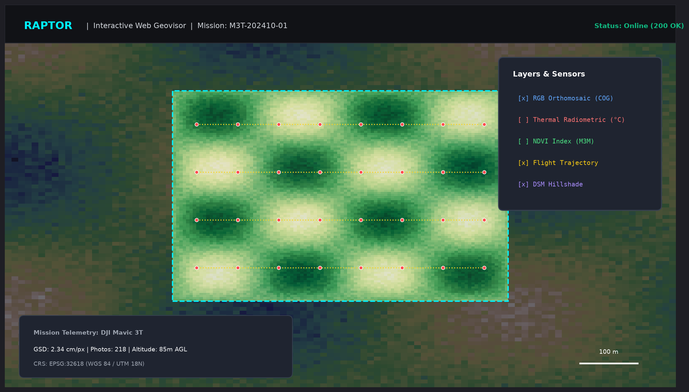
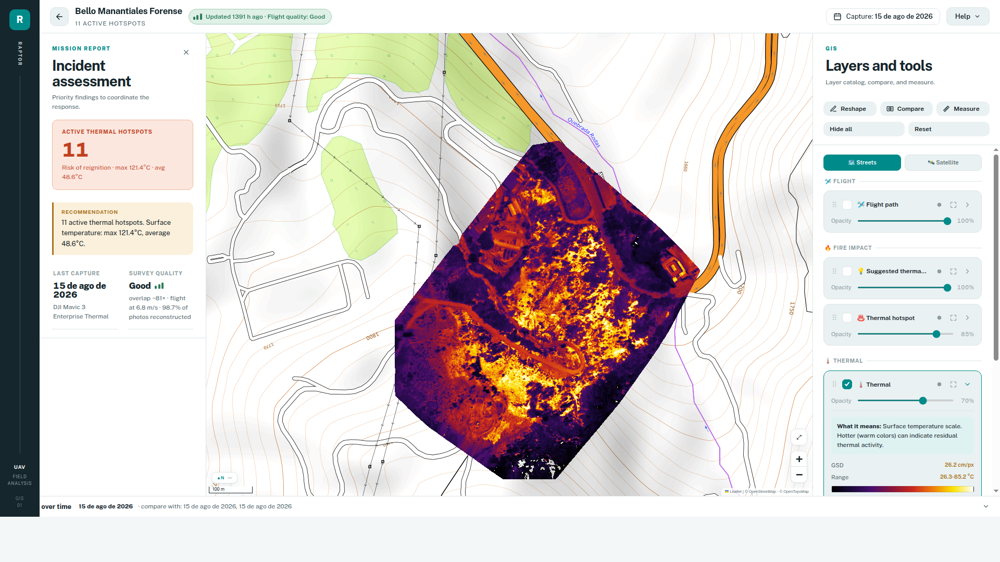
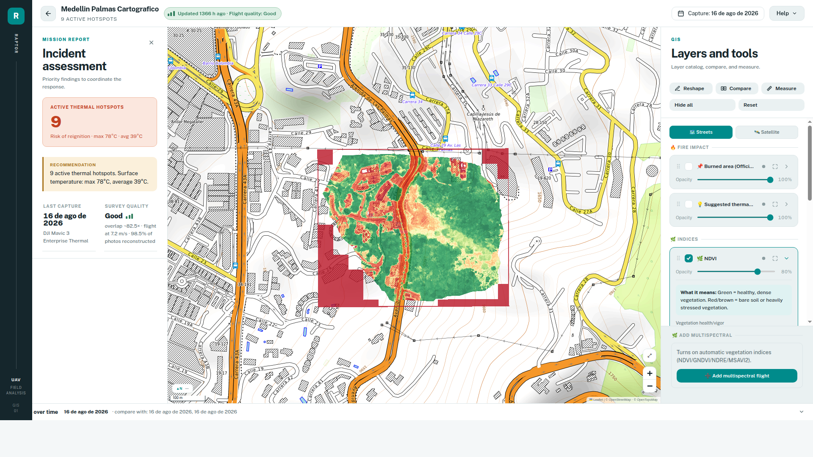

⚡ Section 1: Overview & Tiered Dual-Engine Architecture
RAPTOR (Reconstruction of Aerial Products, Thermal, Optical, and multispectral, for Response) is a unified, multi-sensor photogrammetry and wildfire triage pipeline engineered specifically for tactical UAV flight missions (DJI Mavic 3T, Matrice 300 RTK + Zenmuse H20T, Mavic 3 Multispectral, and Zenmuse P1).
Unlike monolithic photogrammetry suites that force incident commanders to wait up to an hour for basic orthorectification, RAPTOR deploys a tiered, multi-resolution processing architecture that delivers decision-grade situational awareness in seconds while retaining complete cartographic rigor in the background:
Direct Ray-DEM vector intersection directly on raw R-JPEG drone frames. Eliminates SfM bundle adjustment entirely for instantaneous mop-up hotspot geolocation during active wildfire suppression.
Direct ray-projection orthorectification powered by the native Rust Zenith engine over a 3-tier DEM cascade (Local GeoTIFF → Copernicus GLO-30 → barometric planar model). Generates tactical RGB/thermal rasters and XYZ map tiles.
Full photogrammetric bundle adjustment, multi-sensor band alignment, dense point-cloud reconstruction (COPC), and sub-centimeter Digital Surface Models (DSM) via OpenDroneMap and OpenMVS.
| Pipeline Feature / Dimension | Level 0 — Ray-DEM Triage | Level 1 — Zenith Tactical 2.5D | Level 2 — ODM Cartographic 3D |
|---|---|---|---|
| Execution Time | < 2 minutes | 20–40 seconds | 15–45 minutes |
| Core Technology | Analytical Ray-Marching in Memory | Native Rust compiled binary (zenith) |
OpenDroneMap / OpenSfM / OpenMVS |
| Elevation Model (DEM) | External GeoTIFF or Planar Fallback | Local DEM → Copernicus GLO-30 → Plane | Dense photogrammetric DSM from stereo |
| Supported Sensors | Radiometric Thermal (°C) | RGB Visual + Radiometric Thermal (°C) | RGB + Thermal + 4-Band Multispectral |
| Multispectral Vigor Indices | No | No (Requires 3D sub-pixel band alignment) | Full radiometric calibration (NDVI, etc.) |
| Primary Deliverable | Emergency Hotspot Centroids & Confidence | Tactical Orthomosaics & Incident Summary | Sub-centimeter COG, COPC Point Cloud, DSM |
| Operational Doctrine | Initial wildland mop-up attack | Tactical command perimeter evaluation | Post-event legal/cartographic archiving |
The entire RAPTOR environment runs within ONE SINGLE unified Docker container (consolidating OpenDroneMap, the native Rust Zenith engine, GDAL/PROJ geospatial libraries, the official DJI Thermal SDK v1.8, and the interactive Geovisor web service). No nested Docker-in-Docker daemons or distributed orchestration clusters are required.
🛰️ Section 2: Supported UAV Sensors & Deliverables
RAPTOR is engineered to ingest raw imagery directly from enterprise UAS platforms without proprietary pre-conversion or cloud dependencies:
- RGB Visual: 48 MP 1/2" CMOS sensor with mechanical rolling shutter compensation.
- Thermal Radiometric: Uncooled VOx Microbolometer 640×512 @ 30 Hz, 12 µm pixel pitch, 61° DFOV, focal length 9.1 mm (calibrated focal ~758.3 px).
- Extraction: Homologated 16-bit raw temperature extraction via DJI Thermal SDK v1.8 (
dji_irp).
- Sensors: 20 MP Zoom (23× hybrid optical), 12 MP Wide, 640×512 Radiometric Thermal, and 1200 m Laser Range Finder (LRF).
- Firmware Handling: Automatic fallback for R-JPEG v1 DIRP firmware humidity limits ( threshold).
- RTK Precision: Centimetric GNSS positional logging in EXIF/XMP tags.
- RGB Visual: 20 MP 4/3" CMOS sensor with global mechanical shutter (0.7 s interval).
- Multispectral: 4 discrete 5 MP sensors (Green 560 nm, Red 650 nm, RedEdge 730 nm, Near-Infrared 860 nm).
- Radiometric Sun Sensor: Top-mounted irradiance sensor for real-time solar compensation during flight.
- Sensor: 45 MP Full-Frame (35.9 × 24.0 mm) sensor with 4.4 µm pixel pitch.
- Global Mechanical Shutter: Shutter speed up to 1/2000 s with zero rolling-shutter geometric distortion.
- Memory Guard: Protected by RAPTOR's dedicated full-frame memory slot scheduler (isolated ~23 GB/thread MVS allocation).
The 10 Standard GIS Deliverables
Every completed mission outputs a standardized GIS deliverable package to the mounted --export directory, formatted for immediate ingestion into QGIS, ArcGIS Pro, GeoServer, or Web Map Tile Services:
| Deliverable Code | Format | CRS / Projection | Description & Operational Utility |
|---|---|---|---|
rgb |
UInt8 COG (Cloud Optimized GeoTIFF) | EPSG:9377 / EPSG:4326 | Sub-centimeter true-color orthomosaic with embedded overviews and Deflate compression (PREDICTOR=2). |
thermal |
Float32 COG (Cloud Optimized GeoTIFF) | EPSG:9377 / EPSG:4326 | Calibrated surface temperature raster in degrees Celsius (°C) from DJI Thermal SDK (PREDICTOR=3). |
dsm |
Float32 COG (Cloud Optimized GeoTIFF) | EPSG:9377 / EPSG:4326 | Digital Surface Model representing true canopy and terrain elevation above sea level (PREDICTOR=3). |
multispectral |
Multi-band Float32 COG (4 bands) | EPSG:9377 / EPSG:4326 | Calibrated surface reflectance cube (Band 1: Green, 2: Red, 3: RedEdge, 4: NIR) with embedded overviews. |
indices |
Float32 COG (Cloud Optimized GeoTIFF) | EPSG:9377 / EPSG:4326 | Canopy vigor index rasters: NDVI, GNDVI, NDRE, and MSAVI2 for burn severity analysis (PREDICTOR=3). |
classes |
Byte COG (Cloud Optimized GeoTIFF) | EPSG:9377 / EPSG:4326 | Discrete categorical classification rasters: active fire hotspots and classified vegetation index tiers (PREDICTOR=2, nearest-neighbor overviews). |
confidence |
Byte COG (Cloud Optimized GeoTIFF) | EPSG:9377 / EPSG:4326 | Combined RGB + thermal co-registration validity mask on the thermal grid (PREDICTOR=2). |
area |
GeoJSON / GPKG / SHP / KML | EPSG:9377 / EPSG:4326 | Topological vector polygonal boundary of the fire perimeter with computed area in m² and ha. |
flight_path |
GeoJSON / GPKG / SHP / KML | EPSG:9377 / EPSG:4326 | UAV flight trajectory with 3D camera stations, gimbal attitudes (yaw/pitch/roll), and timestamps. |
situation |
JSON & HTML/PDF Report | N/A | Executive incident triage summary with detected hotspot centroids, peak temperatures, and area metrics. |
pointclouds |
COPC (.copc.laz) |
EPSG:9377 / UTM | Cloud-Optimized Point Clouds (RGB, thermal, multispectral, and D-band) for HTTP range streaming in Potree/QGIS. |
📦 Section 3: Installation, Docker & Webapp Quickstart
RAPTOR is designed for zero-headache deployment on field laptops and dedicated processing workstations running Linux (Ubuntu 22.04 / 24.04, Debian 12, or Arch Linux / Omarchy):
3.1 Standalone Release Installer (Recommended)
Run the standalone bootstrap installer for Linux x86_64 directly from GitHub Releases (automatically installs the native zenith v1.0.0 binary on the host, clones RAPTOR into ~/.local/share/raptor, and launches ./raptor install):
curl -sSL https://github.com/federicogmz/raptor/releases/download/v1.0.0/raptor-install.sh | bash3.2 Install from Source Repository
# Clone repository and execute automated onboarding
git clone https://github.com/federicogmz/raptor.git
cd raptor
./raptor install
The ./raptor install script automatically:
- Detects the host environment and installs missing prerequisites (Docker Engine, NVIDIA Container Toolkit).
- Builds the unified container image
raptor:latest. - Installs the global
raptorcommand into/usr/local/bin(or~/.local/bin). - Prompts for the permanent deliverables destination directory (e.g.
~/raptor-deliveries) and preferred HTTP port (default8080). - Deploys and starts the persistent background webapp container.
Everyday Daemon Management
Once installed, manage the RAPTOR background service from any terminal directory:
| Command | Description | Lifecycle Scope |
|---|---|---|
raptor start |
Start the webapp background daemon with saved settings (~/.raptor/config). |
Restarts container if stopped. |
raptor status |
Display current container status, listening port, and mounted volume bindings. | Read-only inspection. |
raptor logs |
Watch live tail logs of the active webapp service and photogrammetry queue. | Interactive streaming. |
raptor stop |
Gracefully halt the webapp background container. | Halts background worker. |
raptor restart |
Restart the webapp daemon (equivalent to stop followed by start). | Refreshes environment. |
raptor init |
Reconfigure the deliveries folder path or listening HTTP port. | Updates ~/.raptor/config. |
raptor shell |
Open an interactive Bash debugging shell inside the running container. | Power-user diagnostics. |
RAPTOR inspects the host kernel for NVIDIA GPU drivers and nvidia-container-toolkit at launch time. If GPU hardware is present, OpenMVS dense point-cloud reconstruction executes with CUDA acceleration. If no GPU is detected (or if --no-gpu is specified), RAPTOR smoothly activates CPU-only reconstruction without throwing pipeline exceptions.
💻 Section 4: Complete CLI Reference (raptor run)
For non-interactive field scripting, automated batch processing, or CI/CD pipelines, invoke raptor run [options]. All flags are verified against the runtime binary help output:
| Flag / Parameter | Category | Default | Description & Behavioral Rules |
|---|---|---|---|
--input DIR |
Required* | Path to visual/thermal flight folder (DJI M3T or Zenmuse H20T). | |
--input-ms DIR |
None |
Path to 4-band multispectral flight folder (DJI Mavic 3 Multispectral). | |
--mode MODE |
rgb+thermal |
Processing mode selector: rgb+thermal (default), rgb, or none. |
|
--preset NAME |
cartografico |
Reconstruction quality preset:
• tactico: Immediate field triage response (features reduced, faster bundle adjustment).
• cartografico: Standard operational flight delivery (full resolution, balanced).
• forense: Forensic analysis and legal archiving (maximum point density and ray refinement).
|
|
--terreno TYPE |
plano |
Terrain profile: plano or escarpado. Retained for backwards compatibility; all modern presets enforce incremental SfM to prevent photo drops in steep relief. |
|
--subsample N |
None |
URGENCY MODE: Process 1 out of every N photos (N ≥ 2, e.g. 3). Cuts SfM reconstruction time by ~3× in rugged terrain. Original source files remain untouched. | |
--reuse-odm |
false |
Reuse existing ODM reconstruction stages from --runs cache instead of starting from scratch. |
|
--max-concurrency N |
Auto (RAM) |
Explicit thread override for ODM stages. Defaults to safe automatic hardware budgeting based on real available RAM. | |
--no-gpu |
false |
Force CPU-only execution, disabling OpenMVS CUDA dense matching acceleration. | |
--verbose |
false |
Stream raw, unfiltered console output from ODM, OpenSfM, and Python subroutines. | |
--export DIR |
None |
Host target destination folder where all completed products and reports will be published. | |
--export-products LIST |
all |
Comma-separated product whitelist, or all: rgb,thermal,dsm,multispectral,indices,classes,confidence,area,flight_path,situation,pointclouds. |
|
--export-epsg CODE |
source |
Target Coordinate Reference System EPSG code (e.g. 9377 for MAGNA-SIRGAS Origen Nacional Colombia) or source (native UTM/WGS84). |
|
--export-raster-format F |
cog |
Raster format: cog (Cloud Optimized GeoTIFF with internal overviews) or gtiff (standard GeoTIFF). |
|
--export-vector-format F |
geojson |
Vector format: geojson, gpkg (GeoPackage), shp (ESRI Shapefile), or kml. |
|
--runs DIR |
./runs |
Persistent scratch and working directory containing intermediate SfM point clouds and tile pyramids. | |
--json |
false |
Print machine-readable JSON run summary upon mission completion for downstream scripts. | |
--serve |
false |
Keep interactive Leaflet geovisor HTTP server alive upon pipeline completion (disabled by default in CI). | |
--port N |
8080 |
Listening HTTP port when --serve is specified. |
# Complete production mission run with MAGNA-SIRGAS EPSG:9377 reprojection
raptor run \
--input /data/flights/2026-08-14_wildfire_mission \
--preset cartografico \
--export /data/deliverables/wildfire_mission \
--export-epsg 9377 \
--export-raster-format cog \
--export-vector-format gpkg \
--json🔬 Section 5: How It Works (Science & Pipeline Internals)
RAPTOR bridges empirical field operations with rigorous computer vision and geodetic mechanics:
5.1 Hardware Resource Budgeting (scripts/hardware.py)
Monolithic photogrammetry jobs routinely crash on consumer laptops due to Out-Of-Memory (OOM) kernel kills during dense Multi-View Stereo (MVS). RAPTOR eliminates OOM panics through continuous hardware introspection:
While standard 12.3 MP drone sensors require ~6.3 GB of uncompressed buffer space per thread during dense stereo matching, a 45 MP Zenmuse P1 requires ~23 GB per worker thread. The multi-project scheduler (odm_slots) dynamically prevents high-resolution full-frame jobs from competing for concurrent cores, allocating dedicated isolated memory slots.
An asynchronous background daemon samples /proc/meminfo at 2.0 Hz. If system-wide unallocated memory drops below the 6.0 GiB safety floor, worker thread pools are automatically throttled to safeguard the host OS and WSL2 virtual machine from fatal kernel freezes.
5.2 Homologated Radiometric Thermal Calibration (core/thermal_params.py)
Raw thermal frames recorded by DJI drones store sensor digital numbers (DN) inside proprietary APP4 and APP5 metadata markers. RAPTOR links the official DJI Thermal SDK v1.8 (dji_irp) to compute physical surface temperatures according to Planck's radiation law, applying standard operational calibration parameters:
| Physical Parameter | Symbol | Operational Value | Valid Physical Range | Operational Justification |
|---|---|---|---|---|
| Surface Emissivity | 0.96 |
[0.10, 1.00] |
Standard emissivity for vegetative canopies, wet soils, and wildland fuels. | |
| Relative Humidity | 15.0% |
[1.0, 100.0]% |
Representative dry atmospheric condition during active wildfire emergencies. | |
| Target Distance | 25.0 m |
[1.0, 25.0] m |
SDK upper boundary; prevents dynamic range compression observed at factory 5 m setting during AGL flights (120–300 m). | |
| Reflected Temperature | 19.0 °C |
[-40.0, 500.0] °C |
Standard ambient background sky/canopy temperature. |
Legacy DJI Zenmuse H20T payloads using R-JPEG v1 firmware return error code 253 when atmospheric humidity is set below 20%. RAPTOR intercepts this SDK return code at runtime and automatically executes an in-memory clamped fallback to , ensuring uninterrupted batch processing without failing the flight mission.
5.3 Level 0 Ray-DEM Emergency Thermal Triage (scripts/thermal_triage_level0.py)
In life-safety tactical scenarios, waiting 30 minutes for SfM reconstruction is not an option. Level 0 Thermal Triage calculates precise ground coordinates of hotspots directly from individual camera poses:
From telemetry gimbal angles (yaw , pitch , roll ), an orthonormal camera orientation matrix is established in East-North-Up (ENU) space:
A ray vector is cast from optical center along optical line of sight . The intersection with the DEM elevation profile is resolved via 16-step interval bisection in memory.
5.4 Multispectral Vegetation Indices & Burn Scar Mechanics
For DJI Mavic 3 Multispectral (M3M) flights, RAPTOR processes the 4 synchronized narrow spectral bands to assess post-fire canopy scorch severity and ecological recovery potential:
Primary indicator of chlorophyll concentration and green photosynthetic biomass. Values drop below 0.1 in active burn scars.
RedEdge (730 nm) penetration avoids saturation in dense tropical canopies, distinguishing deep crown mortality from superficial scorch.
High sensitivity to leaf moisture and senescence stages along wildland-urban interface perimeters.
Eliminates bare soil reflectance bias in sparse arid scrubland and post-fire ash beds without manual empirical soil line factors.
🗺️ Section 6: Interactive Visual Gallery
Explore real operational outputs generated by RAPTOR during wildland fire response and multispectral vegetation triage missions. Click on any preview to open the high-resolution lightbox inspector:


